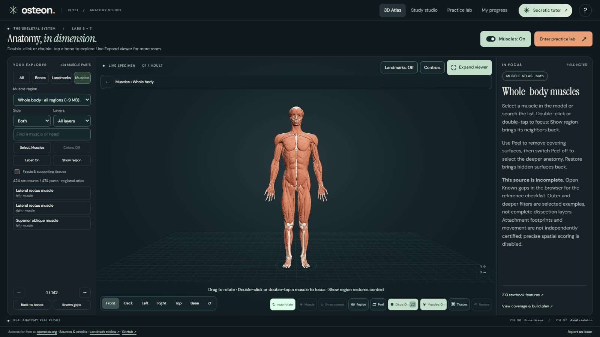
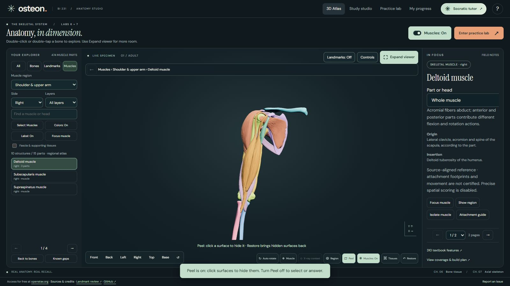
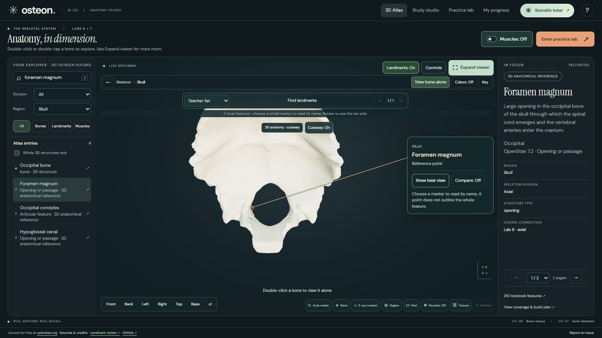
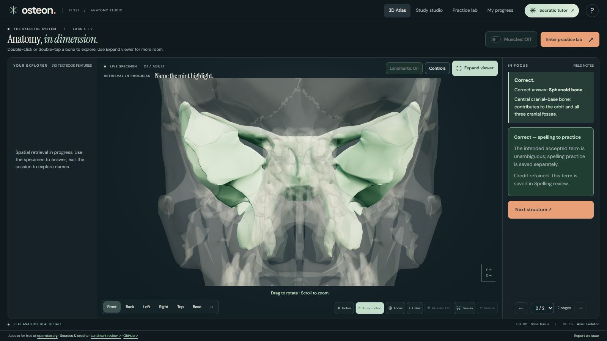
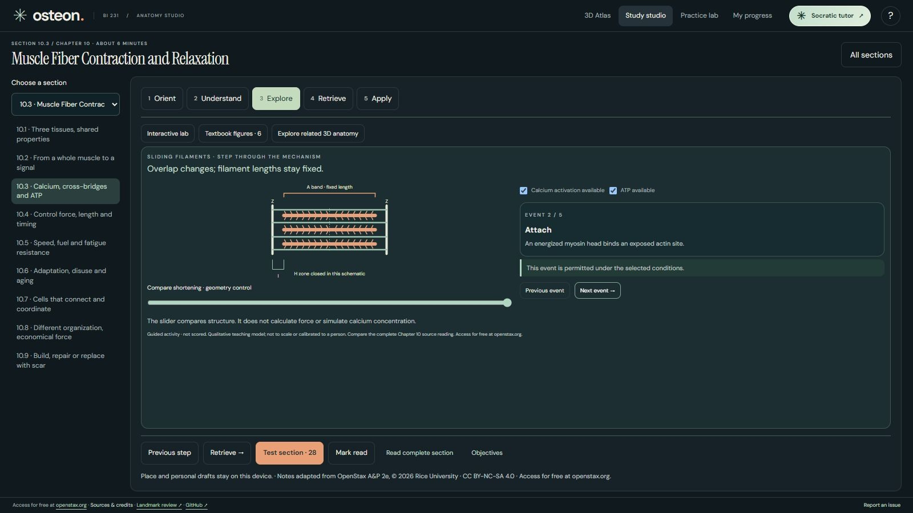
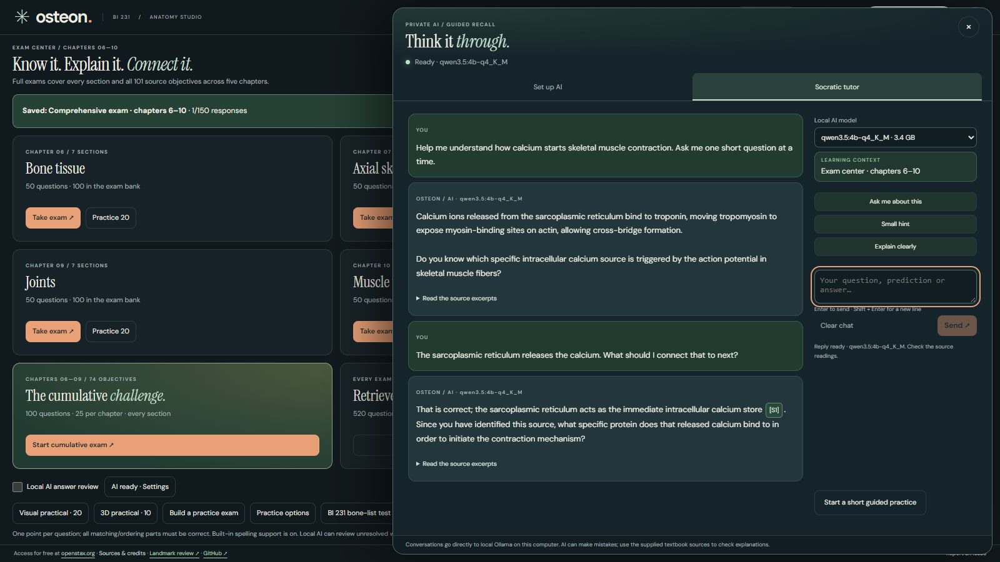

See the relationships.
Drag to rotate, scroll or pinch to zoom. Double-click or double-tap once for a region, then again for one bone. Toggle muscles in your current view and use Peel to look beneath a covering surface.
Explore in 3D. Practice the names. Connect structure with function. Osteon is built by an A&P student as he learns, and keeps growing with new content and improvements.
Free to open · No account needed · Desktop + phone layouts
Optional local AI tutoring requires Ollama and a model on your computer.
Muscle review in progress. Anatomical coverage remains incomplete. Current findings and component checks ↗. Further video production is on hold for muscle work.
1 minute 51 seconds · Warm female narration · Original local AI instrumental · Captions burned in for muted viewing
Full transcript · Research, production revisions and checks ↗
Drag to rotate, scroll or pinch to zoom. Double-click or double-tap once for a region, then again for one bone. Toggle muscles in your current view and use Peel to look beneath a covering surface.
Name highlighted anatomy, inspect feedback and return to spelling practice. Choose guided OpenStax chapters 6–10, a chapter exam or comprehensive review. Save a draft and resume later.
With Ollama running, choose an installed model and ask the Socratic tutor for one question at a time. Check its explanations with the supplied textbook sources. My Progress helps plan your next session.






Recorded November 4, 2026 from a separate example session. The interface, spelling result and tutor replies are genuine. Crops, holds, click cues and cuts improve readability and shorten waits. Phone footage demonstrates a browser viewport; local AI ran on the recording computer. Progress reflects two example attempts, not mastery or grade improvement.
Voice and music were generated locally in ComfyUI on an RTX 5060 Ti 16 GB: Qwen3-TTS 1.7B with a designed synthetic female reference, and ACE-Step 1.5 XL Turbo for the instrumental. No real person's voice was cloned. Research and production checks ↗. Model-source gaps remain documented in the app. Optional AI can make mistakes.